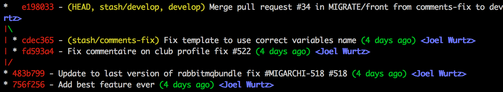
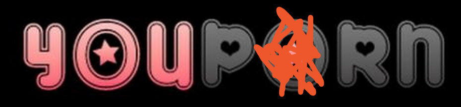
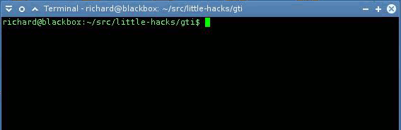
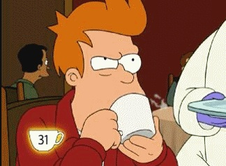
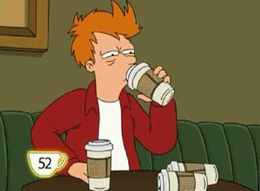

Je fais du Web et du mobile, et je n'ai presque pas honte.
Merci à l'orga de m'avoir prévenu que ma proposition de conférence avait été retenue.
Merci de m'avoir re-prévenu que ma proposition de conférence avait été retenue.
Merci de m'avoir re-re-prévenu.
Merci de m'avoir re-re-re-prévenu.
Pour l'AFUP et pour ce PHPTour :
༼ つ ◕_◕ ༽つ L'AFUP ༼ つ ◕_◕ ༽つ
#22 : Alias GIT
st = status
ci = commit
lg = log --graph --pretty=format:'%Cred%h %Creset
-%C(yellow)%d%Creset %s %Cgreen(%cr) %C(bold blue)<%an>%Creset'
--abbrev-commit --date=relative

#23 :  C'est fait en Symfony2, donc c'est de la veille.
#24 : Installez SL/GTI

#25 : Pair programming
#26 : Session de refactoring
#27 : CAFÉ.
#28 : Utilisez des libs open-source
#29 : Continuez de visiter EstCeQueCestBientotLeWeekend.fr
#30 : Automatisez tout ce que vous pouvez !
#31 : Doctrine Migrations
#32 : Easter Eggs
#33 : $ alias hcomposer = "hhvm /usr/local/bin/composer"
#34 : Du CAFÉ ! 
#35 : Adhérez à l', ou poussez votre boite à le faire.
#36 : Partagez votre code !
#37 : Faites des fautes de frappe sur vos projets open-source, et chronométrez combien de temps @pborreli met pour faire une PR
#38 : BUVEZ DU CAFÉ !§§
#39 : Un mars, une Guinness et ça repart ! MangerCoder.fr
#40 : Collez des stickers sur votre ordinateur portable
#41 : Ne choisissez pas un sujet trop long pour une conférence de 5 minutes


 /
/
 -->
-->


 /
/ 


 , ou poussez votre boite à le faire.
, ou poussez votre boite à le faire.